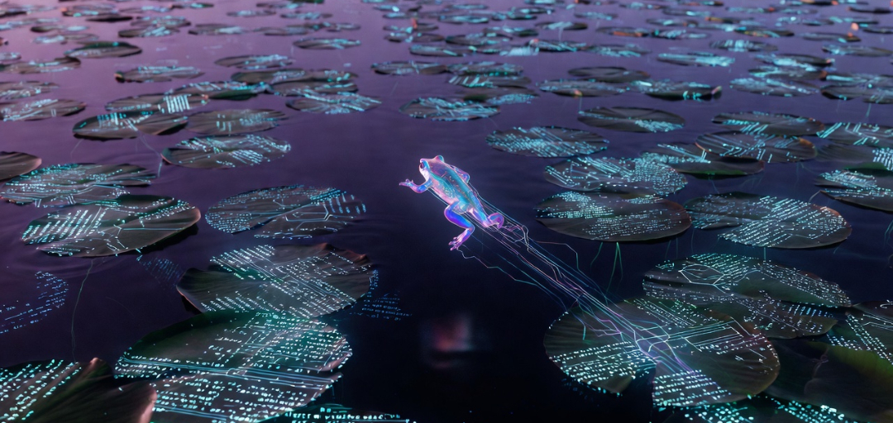

This piece belongs to an ongoing series of articles I’ve been writing. The index page refers to it as the “Analogy Series,” but I’ve been informally calling the evolving collection my Mental Stack — a living, growing archive of ideas, personal experiences, and cross-domain analogies that I continue to expand and revisit. When I feed this entire Mental Stack into an LLM as context, it becomes the rich prefill that powers the generation process I’m about to describe.
Imagine the generation process as a hyper-frog navigating a pond. The hyper-frog is a playful metaphor for the autoregressive decoding mechanism of the LLM. Each micro-hop represents one step of next-token generation — the model deciding what comes next, token by token.
The prefill operation does two crucial things at once. First, it constructs a semantically rich lily pad pond by computing and storing explicit Key-Value snapshots for every token in the Mental Stack. These snapshots encode directional intent — concrete relational waypoints. Second, it generates the final hidden state corresponding to the last prompt token. This hidden state serves as the precise starting position for the hyper-frog when generation begins.
From that point forward, every micro-hop is fully deterministic: the current hidden state produces a Query that attends directly to the explicit directional signals in the growing KV cache. The resulting computation produces a new hidden state, which becomes the input for the next micro-hop. There are no side registers or external initializations — the KV cache is the sole persistent carrier of context and encoded intent.
The most striking beauty of the KV cache is that intent itself is encoded explicitly in each snapshot. Every lily pad placed during prefill carries not just content, but a directional waypoint — a concrete relational signal in its Key and Value vectors saying “pull here when a proportional query arrives.”
The hyper-frog’s micro-hops do not guess at direction. They query these explicit snapshots directly. The waypoint is not implied by the growing sequence. It is already present, baked into the cache geometry.
This is what makes feeding the entire Mental Stack as prefill so powerful. The pond becomes dense with interconnected lily pads carrying strong, persistent directional beacons from concepts such as “views are values,” “git diff reconciliation,” “KRO kernels,” and “dad jokes as Reynolds probe.”
During generation the hyper-frog performs thousands of micro-hops. Each hop is a tiny perspective shift driven by the attention mechanism:
The generated narrative we read is the travelogue of this incremental navigation. When the frog glides faithfully along strong kernel alignments, the output feels grounded and insightful. When it ventures near the laminar-to-turbulent threshold, we see productive eddies or sudden cross-domain bridges — classic Reynolds-number behavior.
The generated output is the specimen we are examining — what engineers call the “device under test,” or DUT. Just as I once used an HP 4284A precision LCR meter with its large LCD display to probe MOS capacitors and painstakingly extract near-conduction-band interface trap densities in SiC via AC conductance measurements, the human reader — armed with the rich Mental Stack that shaped the prefill — now acts as the precision instrument.
By writing this series of articles, I am building my own diagnostic toolkit: a set of lived primitives and KRO-reduced kernels that let me measure how strongly the narrative traverses specific lily pads, where the hyper-frog’s micro-hops show clean alignment with the explicit directional snapshots in the KV cache, and where smooth narrative may be masking weaker or opportunistic signals.
This gives us a practical, locally runnable methodology:
past_key_values).Strong explicit alignment + clear traversal in output = faithful expansion driven by the prefill’s encoded intent.
Weaker alignment + overly smooth narrative = more opportunistic blending.
The dual nature of attention becomes even more profound here. The model reads explicit directional signals encoded in silicon snapshots. The human reader resonates proportionally with the same underlying ideas. Both are navigating a landscape where intent has been made explicit — one through QKV mathematics, the other through lived analogical memory.
This approach also highlights the neutral power of Con-Science: the very act of narration is itself the conscience of the narrative. The same smoothness can produce genuine insight when riding strong directional beacons — or plausible but shallower confidence when the underlying signals are weaker. It is therefore double-edged — capable of both real discovery and quiet illusion.
What makes this scaffold especially powerful is that it opens the door to micro-hop inspection. Because the KV cache is the sole persistent state, we can locally examine — at any chosen step — how a specific snapshot (or cluster of snapshots) mathematically influenced the next micro-hop. By measuring alignment between the current Query, the cached directional signals, and our KRO-reduced kernels, we gain clearer visibility into whether each hop was driven by faithful expansion of prefill intent or by smoother, more opportunistic blending.
This scaffold does not replace deep mechanistic interpretability. It complements it by giving us a lightweight, analogy-native way to probe generated text: not just what the frog traversed, but how the explicit snapshots in the KV cache shaped each micro-hop along the way.
The loop never really closes. It just gets more instrumented — and therefore more interesting.